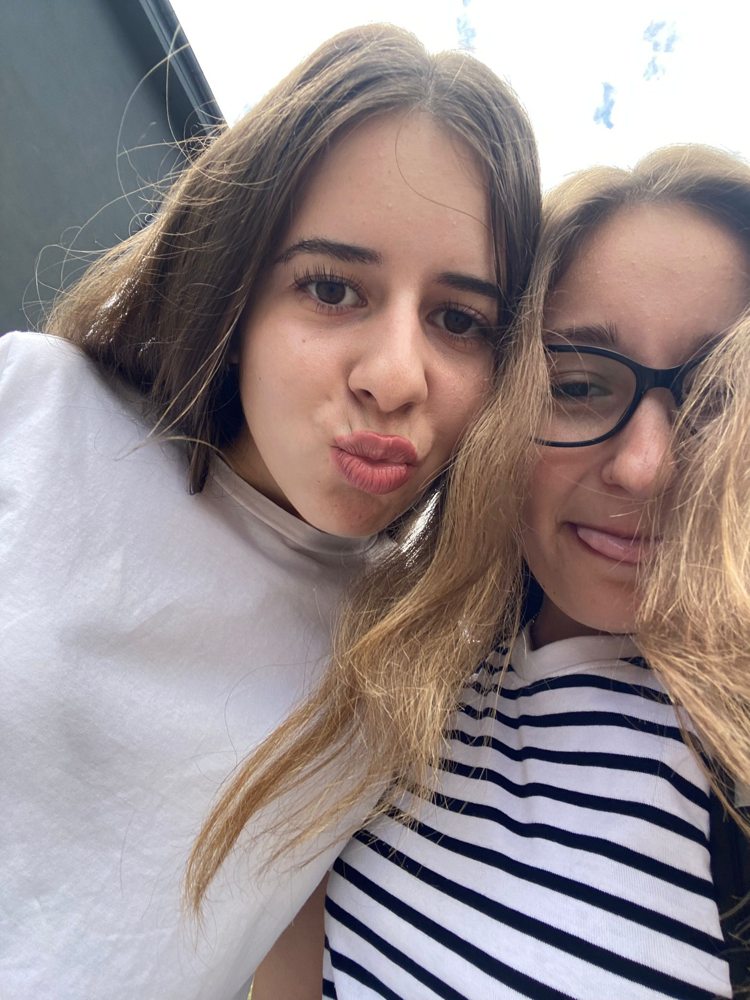
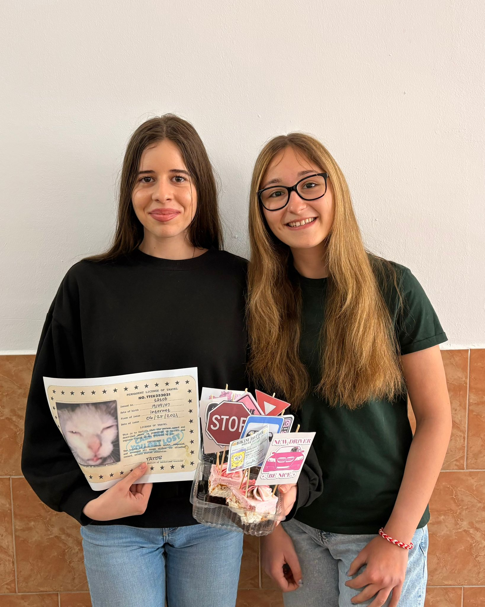

Amintiri iar
Unele amintiri merită păstrate pentru totdeauna...
04.06.2026
Ziua în care am vorbit prima dată

Nu am o poză de atunci, dar pun asta pt ca a fost prima poza a noastra si ramane pentru totdeauna in suflet.
15.09.2025
Prima poză de când a început școala

Zi de nota 10, încă mai aveam 9 luni de stat împreună pe la școală, aș vrea și acum să mai stăm 😅
02.02.2026
Legătură de păstrat :)

Am început să fim din ce în ce mai apropiate și încrederea creștea din ce în ce mai mult, la fel și fericirea. Orice moment era prețuit ✨
12.03.2026
Șofer nou în trafic 🙂↕️

Una dintre cele mai frumoase zile, cu amintiri de neuitat, fericire pe măsură, la fel și șoferița 🙈
04.06.2026
Last day in highschool
.jpeg)
Un moment emoționant, cu lacrimi de fericire și de tristețe dar frumos, de prețuit 🥲
Dar amintirile nu se termină aici...
Emoția pe care am vrut să o transmit a fost entuziasmul că am o persoană care să facă despărțirile grele, dar care îți este sprijin în continuare, indiferent de obstacolele impuse de viață !💟